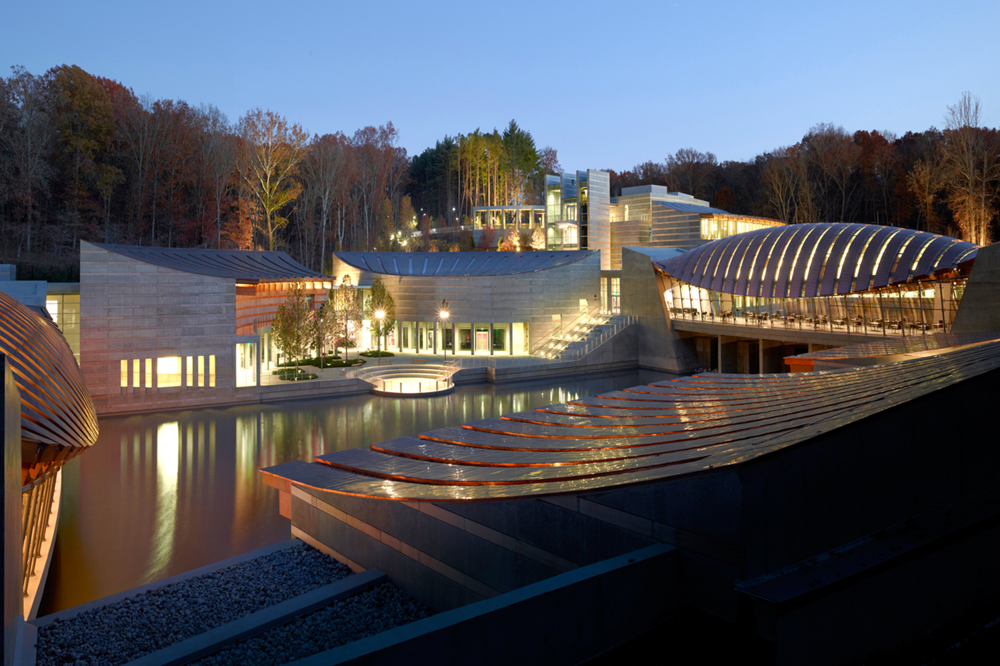

Explore

Mission Statement
MonoMuse is dedicated to exploring the evolving relationship between art, technology, and society. Our mission is to inspire curiosity and creativity by showcasing innovative exhibitions that highlight how digital tools, emerging technologies, and human imagination shape the future of artistic expression.
Who We Serve
MonoMuse welcomes visitors of all backgrounds — first-time guests, students, researchers, and returning members. We design our experiences to be inclusive, interactive, and inspiring for everyone.
Founded
MonoMuse opened its doors in 2016 with a pioneering exhibition on digital storytelling.
Milestones
- 2016 — MonoMuse opens with its first exhibition on digital storytelling.
- 2018 — Launch of the Interactive Media Lab, allowing visitors to experiment with creative coding.
- 2023 — Expansion of the museum space and launch of international artist collaborations.